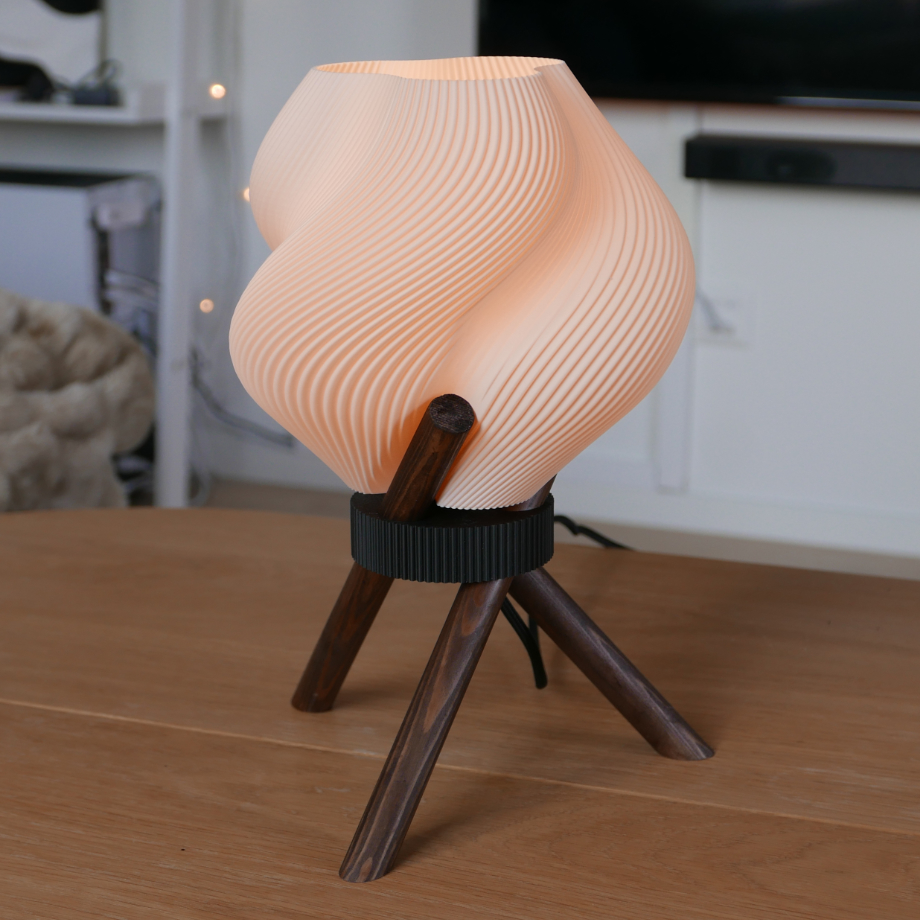
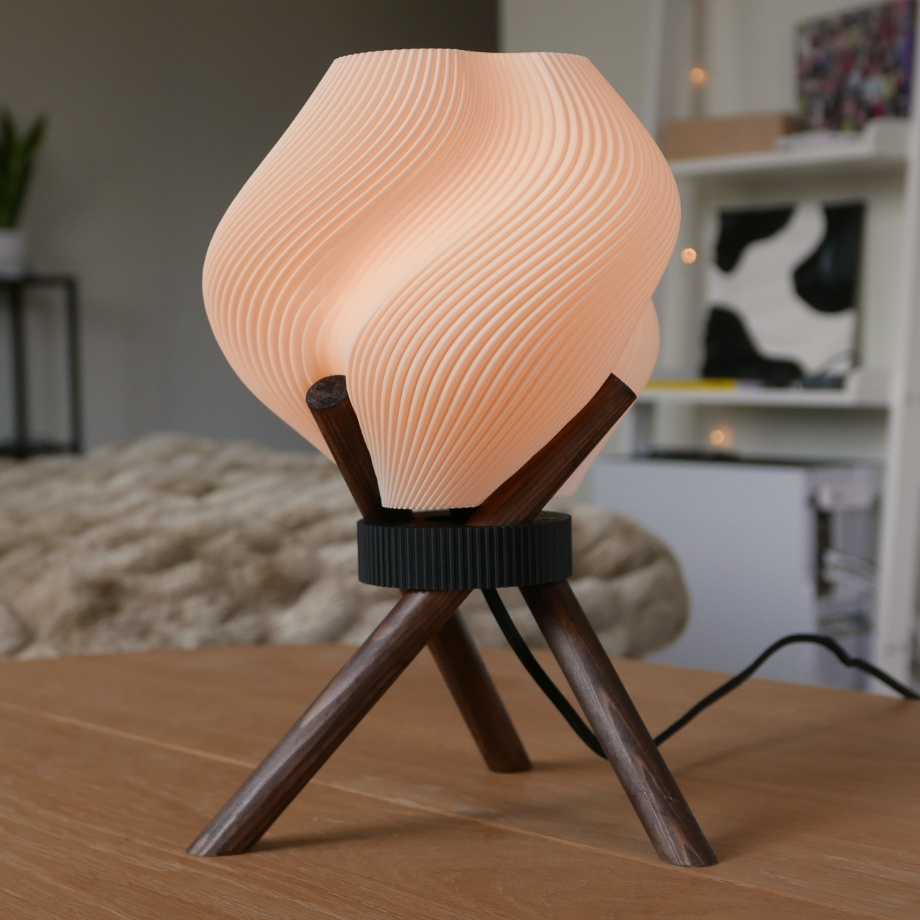
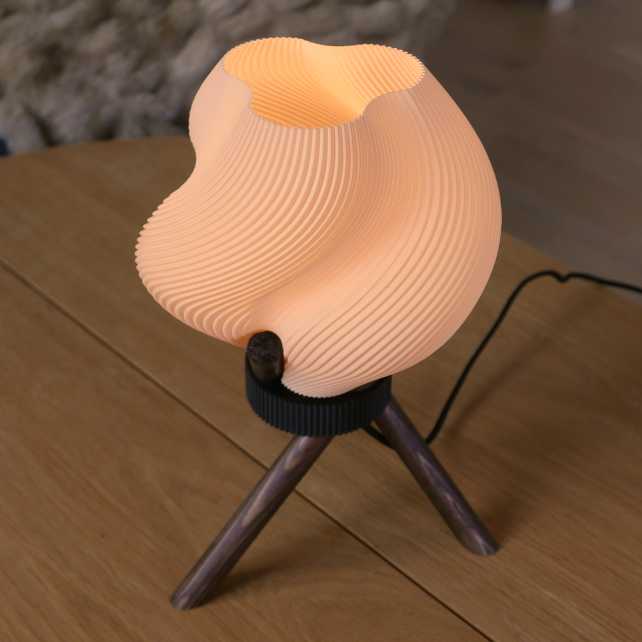
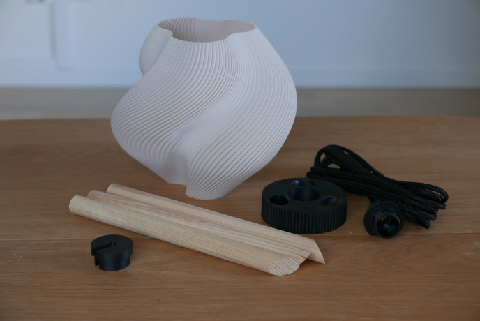
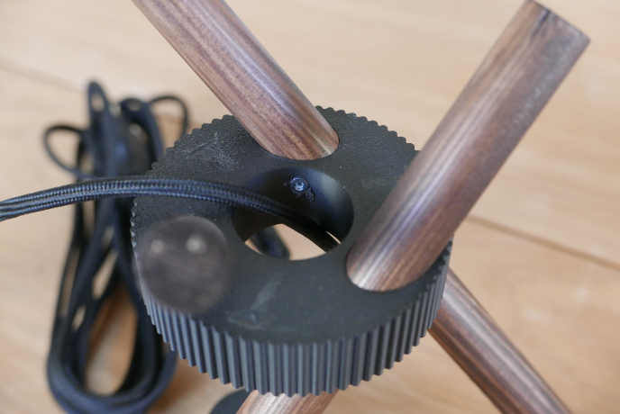

En liten kombo av Lampskärm och Lutande lampa
Ser lite ut som ett kamerastativ




Gjorde en liten jigg för att såga ut träpinnarna i rätt vinkel annars var de mest 3D printing av resten av delarna
Tänkte använda den lilla kåpan längst ner till vänster men tyckte den blev överflödig i slutändan

Hade egentligen tänkt att limma fast träpinnarna men kom på att jag enkelt kunde skruva fast pinnarna i mittgrejen
Orkade inte printa om den så bara borrade hål och skruvade fast pinnarna, ingen som ser detta ändå
Sen är de bara att sätta skärmen ovanpå pinnarna